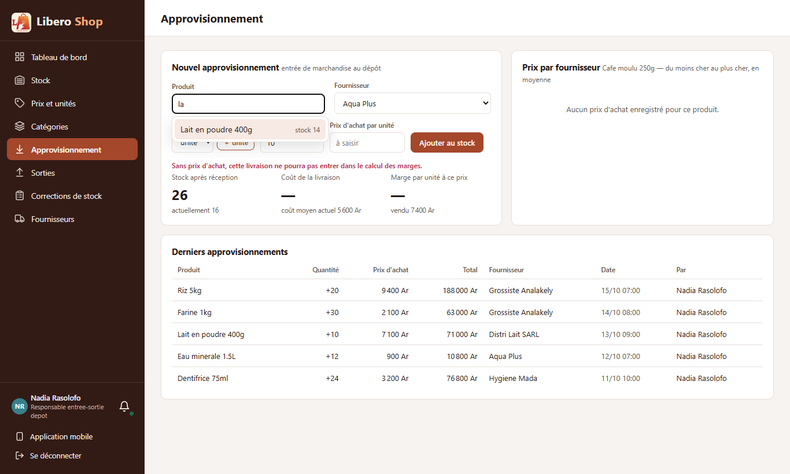
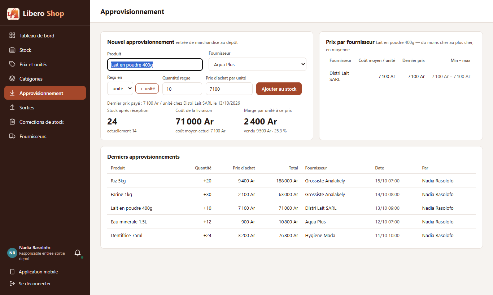
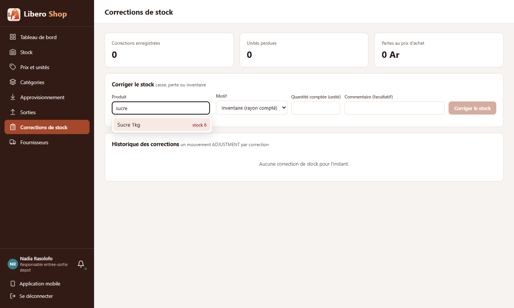
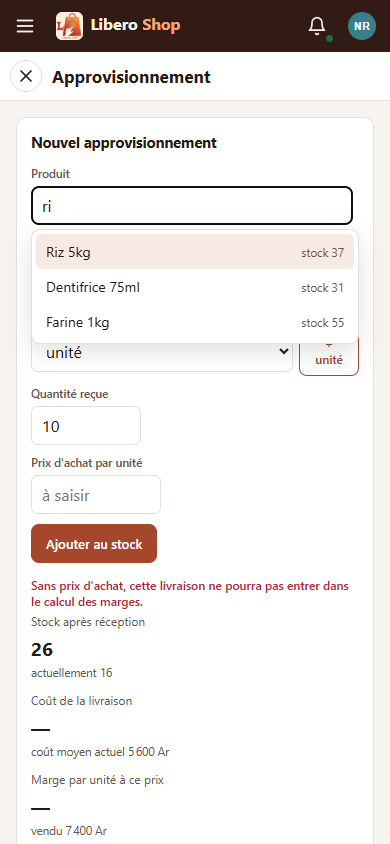

← Tous les comptes rendus de l'interface
UI-30Un seul sélecteur de produit : chercher ou scanner
- Sur Approvisionnement et Corrections de stock, la longue liste déroulante de tout le catalogue est remplacée par un champ « Produit ».
- On tape deux lettres du nom : les produits correspondants s'affichent avec leur stock actuel.
- On peut aussi scanner le code-barres (douchette, ou caméra du téléphone dans l'application).
- Un code imprimé sur un carton choisit le produit et le carton : la livraison se compte en cartons sans autre choix.
- Après un choix, le nom reste sélectionné : le code scanné ensuite le remplace, on enchaîne les produits sans cliquer.
1. Le problème
Pour enregistrer une livraison ou corriger un stock, il fallait dérouler une liste de tout le catalogue et y trouver le produit à l'œil. Avec quelques centaines d'articles (une boutique dont le catalogue a été importé), c'était long, et la douchette ne servait à rien sur ces pages.
2. Ce qui a été fait
Un composant unique, app-product-picker, remplace la liste sur les deux pages. Ce qu'on y tape est lu de
deux façons, dans cet ordre :
La recherche se fait sur la liste de produits que la page a déjà (elle est tenue à jour en direct) : pas d'attente du serveur à chaque lettre. Elle ignore les accents et les majuscules (« cafe » trouve « Café »), comme la recherche de Prix et unités, qui utilise maintenant la même fonction.
3. Le résultat en images
Approvisionnement
Nadia — responsable de dépôt Deux lettres suffisent ; le stock de chaque produit est affiché.


Sans recliquer, Nadia scanne le paquet suivant : le nom sélectionné est remplacé par le code, et le bon produit est choisi.
9990001112223 choisit « Riz 5kg » ; le nom reste sélectionné pour le scan suivant.Corrections de stock

Sur téléphone

4. À éviter / attendu
<!-- tout le catalogue dans une liste -->
<select>
@for (product of products()) {
<option>{{ product.name }}</option>
}
</select><app-product-picker
[products]="products()"
[selected]="selectedProduct()"
(picked)="pickProduct($event.product.id,
$event.packagingId)" />Le champ garde le focus après un choix. Sans sélection du nom, le code scanné ensuite s'ajoutait au nom (« Lait en poudre 400g9990001112223 ») et rien n'était trouvé : c'est corrigé et testé.
5. Tableau récapitulatif
| Fichier | Changement |
|---|---|
ui/…/core/catalog/product-pick.ts | nouveau : recherche par nom (tous les mots, sans accents) et par code exact (pièce ou carton) |
ui/…/shared/components/product-picker.component.ts | nouveau : le champ « Produit » (liste, flèches, Entrée, caméra) |
ui/…/features/depot-manager/supply.component.ts | liste déroulante remplacée ; un code de carton choisit aussi « Reçu en : carton » |
ui/…/features/depot-manager/stock-adjustments.component.ts | liste déroulante remplacée |
ui/…/features/catalog/product-prices.component.ts | utilise la fonction de recherche partagée au lieu de sa copie |
| Règle | Test |
|---|---|
| Rien n'est proposé avant deux lettres | product-pick.spec.ts, product-picker.component.spec.ts |
| Tous les mots, dans n'importe quel ordre, sans accents ; les noms qui commencent par le mot d'abord | product-pick.spec.ts |
| Un code exact seulement ; un code de carton donne le carton | product-pick.spec.ts, product-picker.component.spec.ts |
| Un code inconnu est signalé, rien d'autre n'est choisi | product-picker.component.spec.ts |
| Le code suivant remplace le nom choisi | product-picker.component.spec.ts |
Tests : tests de l'interface au vert (214). Aucun changement côté serveur. Pas de défilement de côté à 1366 px ni à 390 px.
Hors périmètre, signalé : les fenêtres « Ajouter du stock » et « Corriger » ouvertes depuis le menu « ⋮ » ont déjà leur produit ; elles n'ont pas besoin du sélecteur. La réception de plusieurs produits (UI-31) le réutilisera.